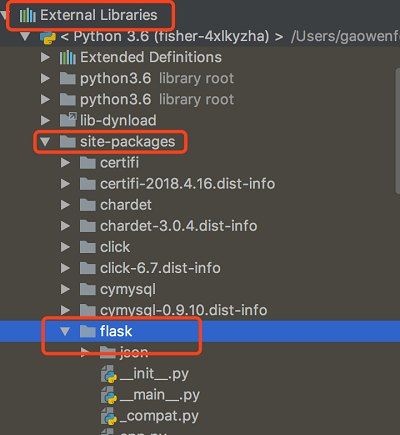
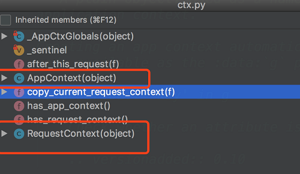
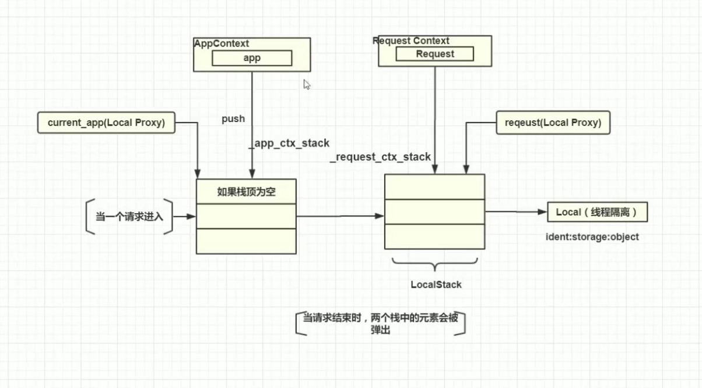
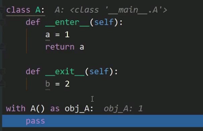
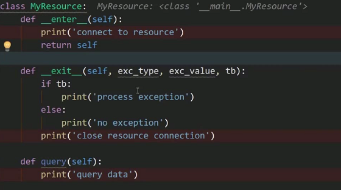

Flask 学习笔记|04 flask核心机制
flask最核心的是两个上下文，而这两个上下中包含大量的Python高级编程应用。我们需要理解上下文的意义，并且通过借鉴flask的下文机制，学习Python的上下文管理器（With）、栈结构的应用。我们还将学习，到底如何通过阅读源码来解决问题
4.1 flask中经典错误 working outside application context
在 3.8节我们通过db.create_all(app=app)的方式解决了working outside application context的错误，下面我们来深究，这个错误出现的具体原因是什么。
首先写一段测试代码
from flask import Flask, current_app
app = Flask(__name__)
# 断点调试这里显示current_app=[LocalProxy]<LocalProxy unbound>
a = current_app
# RuntimeError: Working outside of application context.
b = current_app.config["DEBUG"]
我们通过current_app获取配置，看似没有问题的代码，却抛出了同样的异常。
通过断点调试发现current_app并不是Flask对象，而是一个unbound的LocalProxy。
回想我们之前的request对象，其实也是个LocalProxy。
# context locals
_request_ctx_stack = LocalStack()
_app_ctx_stack = LocalStack()
current_app = LocalProxy(_find_app)
request = LocalProxy(partial(_lookup_req_object, 'request'))
session = LocalProxy(partial(_lookup_req_object, 'session'))
g = LocalProxy(partial(_lookup_app_object, 'g'))
那么这里为什么会抛出这个异常呢，想要回答这个问题，就需要深入理解这个LocalProxy。我们在下一小节进行介绍
4.2 AppContext、RequestContext、Flask与Request之间的关系
1.定位AppContext、RequestContext
Flask有两个上下文，应用上下文-AppContext和请求上下文-RequestContext。他们本质都是对象，是一种封装。应用上下文是对Flask的封装，请求上下文是对Request的封装
下面我们来通过源码，了解一下这两个上下文。 Flask源码的全貌，是在External Libraries/site-pacages/flask下 Flask是一个非常好的微框架，里面的源码并不多，大部分都是注释，这给我们可以很方便的阅读源码
我们要看的两个上下文在ctx.py（context的缩写）中，其中的AppContext就是应用上下文，RequestContext就是请求上下文 
阅读AppContext和RequestContext的构造函数，发现他们都将核心对象app作为了他们的一个属性
def __init__(self, app):
self.app = app
self.url_adapter = app.create_url_adapter(None)
self.g = app.app_ctx_globals_class()
# Like request context, app contexts can be pushed multiple times
# but there a basic "refcount" is enough to track them.
self._refcnt = 0
并且他们都有相同的四个方法
def push(self):
...
def pop(self, exc=_sentinel):
...
def __enter__(self):
...
def __exit__(self, exc_type, exc_value, tb):
...
2.为什么需要上下文
为什么需要上下文，我们之间操作Flask的核心对象app不可以吗？
这是一个设计思想。有时候呢，我们不光需要这个核心对象app，还需要他外部的一些东西，这个时候，我们可以他们统一结合封装到一起，组装成一个新的上下文对象，并且在这个对象之上，可以提供一些新的方法，如我们上面所提到的push、pop等
3.对AppContext、RequestContext、Flask与Request的意义做出一个解释
- Flask：核心对象，核心对象里承载了各种各样的功能，比如保存配置信息，再比如注册路由试图函数等
- AppContext：对Flask的封装，并且增加了一些额外的参数
- Request：保存了请求信息，比如url的参数，url的全路径等信息
- RequestContext：对Request的封装
我们在实际编码过程中，可能是需要Flask或者Request的信息的，但是这并不代表我们应该直接导入这两个对象获取相关信息，正确的做法是从AppContext，RequestContext中间接的获得我们需要的信息
即使这样，我们也没有必要导入Context去使用上下文，这就回到了current_app和request这些LocalProxy，他们提供了间接操作上下文对象的能力，使用了代理模式
4.3 详解flask上下文与出入栈
Flask工作原理

1.当一个请求进入Flask框架，首先会实例化一个Request Context，这个上下文封装了请求的信息在Request中，并将这个上下文推入到一个栈(_request_ctx_stack/_app_ctx_strack)的结构中，即之前将的push方法
2.RequestContext在入_request_ctx_stack之前，首先会检查_app_ctx_strack是否为空，如果为空，则会把一个AppContext的对象入栈，然后再将这个请求入栈到_request_ctx_stack中
3.我们的current_app和request对象都是永远指向_app_ctx_strack/_request_ctx_stack的栈顶元素，也就是分别指向了两个上下文，如果这两个值是空的，那么LocalProxy就会出现unbound的状态
4.当请求结束的时候，这个请求会出栈-pop
回到我们之前的测试代码，如果要想让我们的测试代码正常运行，就需要手动将一个AppContext入栈。
from flask import Flask, current_app
app = Flask(__name__)
# 获取AppContext，里面的代码很简单，就是：return AppContext(self)
ctx = app.app_context()
# 将AppContext入栈
ctx.push()
# 断点调试这里显示current_app=[LocalProxy]<LocalProxy unbound>
a = current_app
# RuntimeError: Working outside of application context.
b = current_app.config["DEBUG"]
print(b)
注意
虽然current_app和request指向的是两个上下文，但是他们返回的却是Flask核心独享和Request对象。下面来看下这部分的源码
globals.py
# globals.py中实例化LocalProxy获取current_app的代码中，传入了一个_find_app方法
current_app = LocalProxy(_find_app)
def _find_app():
# 取栈顶元素
top = _app_ctx_stack.top
if top is None:
raise RuntimeError(_app_ctx_err_msg)
# 获取ctx中的app对象
return top.app
从源码中可以看到，他获取的是app核心对象。
4.4 flask上下文与with语句
我们上一小节通过手动将app推入栈，弹出栈的方式，解决了working outside application context的问题。实际上更经典的做法是使用with语句来完成。
首先使用with语句替换之前的代码
app = Flask(__name__)
with app.app_context():
a = current_app
b = current_app.config["DEBUG"]
什么时候可以使用with语句：
1.实现了上下文协议的对象，可以使用with语句 2.对于实现了上下文协议的对象，我们通常称为上下文管理员 3.通过实现__enter__和__exit__来实现上下文协议 4.上下文表达式必须返回一个上下文管理器
对于上面一段代码来说，AppContext就是上下文管理器；app.app_context()就是上下文表达式。__enter__中做了push操作，__exit__中做了pop操作。
所以只要进入with语句，current_app就是有值的，一旦离开了with语句，current_app
就会弹出，然后就又没有值了（又变成了unbound）。
def __enter__(self):
self.push()
return self
def __exit__(self, exc_type, exc_value, tb):
self.pop(exc_value)
if BROKEN_PYPY_CTXMGR_EXIT and exc_type is not None:
reraise(exc_type, exc_value, tb)
通过数据库的链接和释放来理解with语句的具体含义
连接数据库的操作步骤： 1.连接数据库 2.sql或者其他的业务逻辑 3.释放资源
如果上面的第二部分出错，那么第三部分的释放资源就不会被执行，资源就会一直被占用。
解决这个问题的通常做法是使用try-except-finally
但是在finally中更优雅的方式就是使用with语句中。我们可以把连接数据库的操作写在上下文管理器的__enter__方法里面，把业务代码写在with语句的代码块里面，把释放资源的语句写在__exit__里面。
读写文件的具体例子
一般的写法
try:
f = open(r'/Users/test.txt')
print(f.read())
finally:
f.close()
使用with语句的写法:
with open(r'/Users/test.txt') as f:
print(f.read())
注意上面的with语句后面的as 返回的并不是上下文管理器，他实际上是__enter__方法返回的一个值,
 上面一段代码我们在__enter__中返回了一个a，所以下面as 后的obj_A就是1
exit方法详解
注意我们编写的测试代码，运行时会报错的，错误原因是exit方法接受的参数数量不够。 exit方法的作用不只是释放资源，还有处理异常，所以exit方法还要多接受exc_type,exc_value,tb三个参数。这三个参数在没有异常发生的时候回传控制，如果有异常的话，这三个参数分别是异常类型，异常消息，和详细的异常堆栈信息
exit方法还需要返回一个boolean类型的值，如果返回True，那么外部就不会抛出异常，如果返回False，那么还会在外部抛出异常，如果什么都不返回，按照False处理。Flask提供了一种非常灵活的方式，可以让我们选择在with语句内部还是外部处理异常

4.5 详解上下文管理器的exit方法
4.6 阅读源码解决db.create_all的问题
对于Flask来说，文档更适合中高级的开发者，而对于新手不是特别友好。所以以不变应万变。我们可以遇到问题的时候，可以通过阅读源码的时候来解决。
下面我们来看下在第三章的时候，为什么我们的flask_sqlalchemy已经注册了app对象，但是create_all方法还是需要传入app参数，不传就会报错
首先看一下init_app方法的源码
def init_app(self, app):
"""This callback can be used to initialize an application for the
use with this database setup. Never use a database in the context
of an application not initialized that way or connections will
leak.
"""
# 首先是尝试获取app中的配置，如果没有找到则发出警告
if (
'SQLALCHEMY_DATABASE_URI' not in app.config and
# 如果有多个数据库，需要配置这个选项
'SQLALCHEMY_BINDS' not in app.config
):
warnings.warn(
'Neither SQLALCHEMY_DATABASE_URI nor SQLALCHEMY_BINDS is set. '
'Defaulting SQLALCHEMY_DATABASE_URI to "sqlite:///:memory:".'
)
# 防御性编程，给dict设置一些默认值
# setdefault是dict的默认值
app.config.setdefault('SQLALCHEMY_DATABASE_URI', 'sqlite:///:memory:')
app.config.setdefault('SQLALCHEMY_BINDS', None)
app.config.setdefault('SQLALCHEMY_NATIVE_UNICODE', None)
app.config.setdefault('SQLALCHEMY_ECHO', False)
app.config.setdefault('SQLALCHEMY_RECORD_QUERIES', None)
app.config.setdefault('SQLALCHEMY_POOL_SIZE', None)
app.config.setdefault('SQLALCHEMY_POOL_TIMEOUT', None)
app.config.setdefault('SQLALCHEMY_POOL_RECYCLE', None)
app.config.setdefault('SQLALCHEMY_MAX_OVERFLOW', None)
app.config.setdefault('SQLALCHEMY_COMMIT_ON_TEARDOWN', False)
track_modifications = app.config.setdefault(
'SQLALCHEMY_TRACK_MODIFICATIONS', None
)
if track_modifications is None:
warnings.warn(FSADeprecationWarning(
'SQLALCHEMY_TRACK_MODIFICATIONS adds significant overhead and '
'will be disabled by default in the future. Set it to True '
'or False to suppress this warning.'
))
app.extensions['sqlalchemy'] = _SQLAlchemyState(self)
@app.teardown_appcontext
def shutdown_session(response_or_exc):
if app.config['SQLALCHEMY_COMMIT_ON_TEARDOWN']:
if response_or_exc is None:
self.session.commit()
self.session.remove()
return response_or_exc
create_app 方法的源码
def _execute_for_all_tables(self, app, bind, operation, skip_tables=False):
app = self.get_app(app)
if bind == '__all__':
binds = [None] + list(app.config.get('SQLALCHEMY_BINDS') or ())
elif isinstance(bind, string_types) or bind is None:
binds = [bind]
else:
binds = bind
for bind in binds:
extra = {}
if not skip_tables:
tables = self.get_tables_for_bind(bind)
extra['tables'] = tables
op = getattr(self.Model.metadata, operation)
op(bind=self.get_engine(app, bind), **extra)
def create_all(self, bind='__all__', app=None):
"""Creates all tables.
.. versionchanged:: 0.12
Parameters were added
"""
self._execute_for_all_tables(app, bind, 'create_all')
可以看到create_all方法调用了_execute_for_all_tables私有方法，_execute_for_all_tables里面第一行的get_app方法用来获取一个app核心对象
def get_app(self, reference_app=None):
"""Helper method that implements the logic to look up an
application."""
# 如果关键字参数的app不为空，就返回参数的app
if reference_app is not None:
return reference_app
# 如果current_app不为空，则返回current_app
if current_app:
return current_app._get_current_object()
# 如果对象的app属性不为空，则返回对象的app属性
if self.app is not None:
return self.app
raise RuntimeError(
'No application found. Either work inside a view function or push'
' an application context. See'
' http://flask-sqlalchemy.pocoo.org/contexts/.'
)
所以通过三个判断，我们可以总结出三个不同的方法来解决我们遇到的问题。 1.在create_all 中传入关键字参数app。也就是我们之前用过的。 2.向堆栈中推入一条app_context，使得current_app不为空。
with app.app_context():
db.create_all()
3.在初始化flask_sqlalchemy对象的时候，传入app参数。
具体选取哪种方式，是根据情况而定的，比如我们当前的情况，就不合适使用第三种方法，因为我们的flask_sqlalchemy对象是在models中的book.py中的，如果用第三种方式，还需要在这里导入app对象。
- 原文作者：Binean
- 原文链接：https://bzhou830.github.io/post/20160504flask04/
- 版权声明：本作品采用知识共享署名-非商业性使用-禁止演绎 4.0 国际许可协议进行许可，非商业转载请注明出处（作者，原文链接），商业转载请联系作者获得授权。